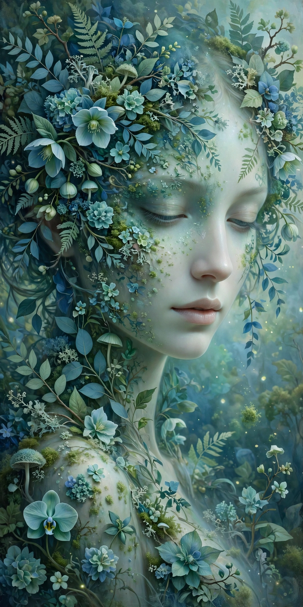

Blue-Green Botanical Woman
Người phụ nữ giữa rừng cây xanh lam, phong cách thick-painting nghệ thuật.

Nội dung prompt
Generate 2 different ultra-high-definition 8K images of the same character, each with a different pose, body movement, and facial expression. The woman stands quietly among translucent blue-green plants. The flowing white hem of her outfit is illuminated by side backlighting. Numerous vines, delicate leaves and flowers, misty water vapor, and soft glowing light particles surround her. Highly detailed thick-painting CG illustration, refined translucent materials with an OC-rendered quality, combining semi-thick painterly strokes with new Gongbi-style linework and localized cel-shading. Flowing pseudo-impasto brushwork creates an abstract, stream-of-consciousness visual rhythm. Soft Rococo-style color blending combined with gouache, mineral pigments, oil painting, and watercolor techniques. Richly layered paint and detailed canvas texture. A low-saturation palette dominated by blue, white, and green. Rembrandt-style side lighting and side backlighting elegantly outline the figure. High-exposure hazy atmosphere, faded light leaks, vignette light leaks, subtle film grain and LOMO grain, shallow depth of field, colorful bokeh, soft-focus edges, and deep layers of light and shadow. The overall mood is luxurious, melancholic, mysterious, elegant, and youthful, with intricate botanical details and an elaborate natural environment. Dense ornamental plant textures, refined fantasy aesthetics, and a poetic youthful melancholy conveyed through light and shadow. Add a small elegant handwritten cursive watermark at the bottom-right corner: "Created by MẬP MÊ AI ♡"
Prompt cùng thể loại
- Cyberpunk Anime Character Generator
Tạo nhân vật phong cách anime cyberpunk cực ngầu.
- Secret Glance Through Torn Paper
Nhân vật hé mắt qua lớp giấy rách, cận cảnh đôi mắt cuốn hút.
- Macro Face WLOP
Cận cảnh gương mặt phong cách hội họa WLOP sắc nét.